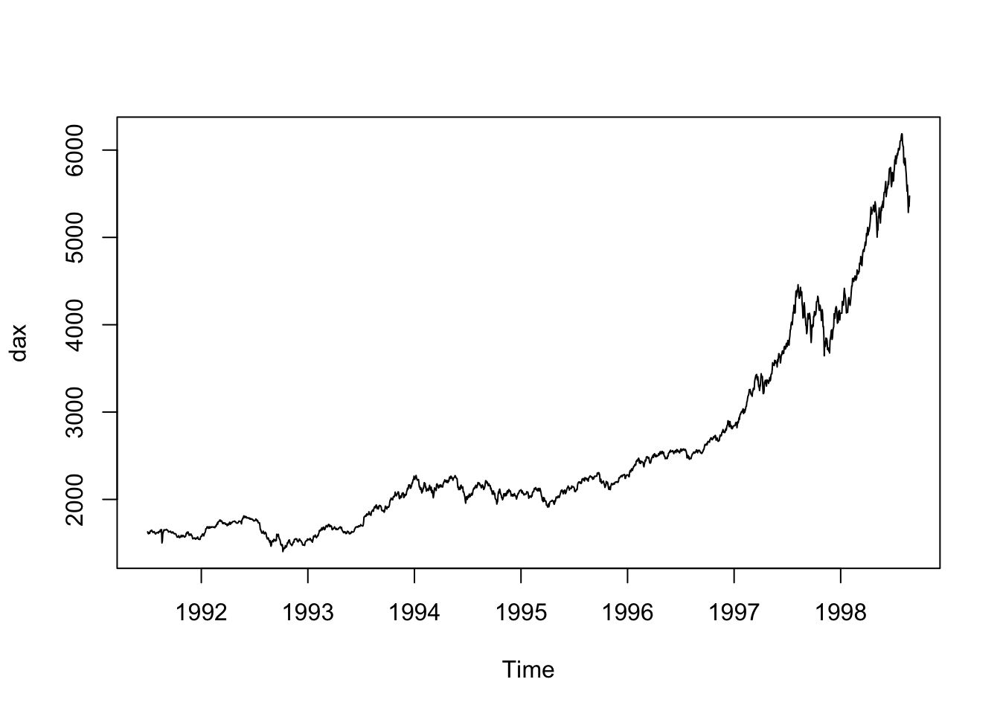
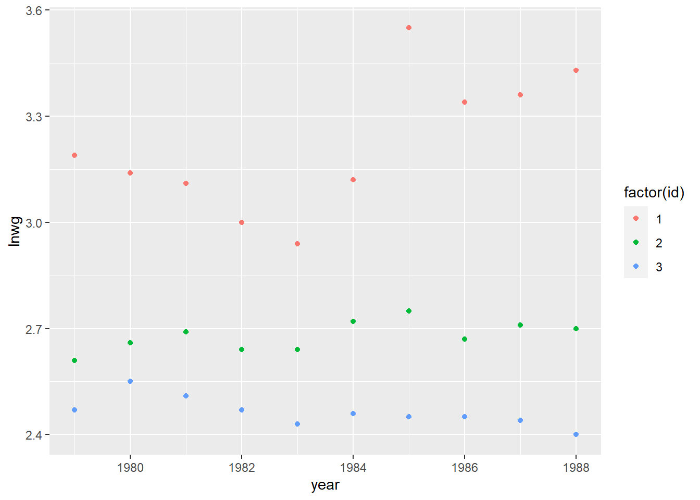
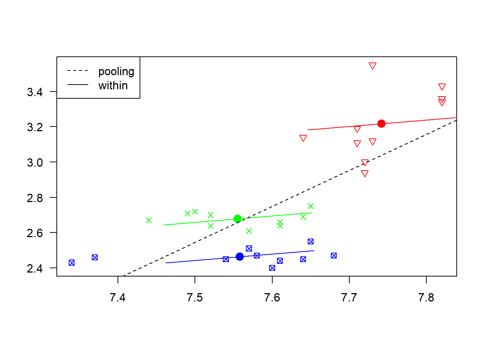

6.3 Paneldata
6.3.1 Videoforelesninger
6.3.2 Kontrollspørsmål
- Hva er paneldata?
- Hva må vi ta hensyn til når vi analyserer paneldata?
- Hvordan ser en generell modell for paneldata ut?
- Hva er den konseptuelle forskjellen mellom faste og tilfeldige effekter?
- Når kan vi bruke faste effekter?
- Når kan vi bruke tilfeldige effekter?
- Finnes det en måte å formelt teste om man skal bruke faste eller tilfeldige effekter? (obs: se helt nederst på denne siden for svaret på denne.)
6.3.3 Teori og R
I denne forelesningen introduserer vi en ny datastruktur. Vi observerer flere individer (tversnittsdimensjonen) gjentatte ganger (tidsdimensjonen), og et slikt datasett kaller vi et panel, eller paneldata. Fordelen ved å jobbe med slike data er åpenbar: vi har mer informasjon og kan gjennomføre mer presise statistiske analyser. På den annen side må vi akseptere at en mer kompleks datastruktur gjør det nødvendig å innføre mer kompleks metodikk.
I gjennomgangen under bruker vi et liten del av dataene fra eksempelet som er beskrevet i videoene. Ønsker du å følge R-gjennomgangen laster du ned følgende datasett:
6.3.3.1 Struktur på Paneldata
Til nå har vi typisk observert \(n\) individer en gang. Hvis vi holder oss til eksempelet fra videoforelesningen, kan vi tenke oss at vi har spurt \(n\) arbeidstakere om hvor mange timer de jobbet forrige år (\(X\)), og hvor mye de hadde i timelønn (\(Y\)). Da ville datasettet sett omtrent slik ut:

Her er \(y_i\) timelønn til arbeidstaker nummer \(i\), og \(x_i\) er antall timer jobbet for arbeidstaker nummer \(i\). Hvis vi så ønsker å se om det er en sammenheng mellom disse to variablene, kan vi sette opp en enkel regresjonsmodell som vi har gjort før:
\[\begin{equation} y_i = \alpha + \beta x_i + \epsilon_i, \label{p-ols} \end{equation}\] der vi gjør de vanlige antakelsene om homoskedastisitet, uavhengige feilledd, og selvsagt at forklaringsvariabelen er eksogen, dvs at de stokastiske variablene \(X\) og \(\epsilon\) er uavhengige fra hverandre. Hvis vi aksepterer det, så kan vi estimere \(\beta\) ved hjelp av minste kvadreters metode (OLS - orinary least squares), som vi kan tolke som forventet økning i timelønn ved å jobbe en time ekstra.
For paneldata har vi ikke lenger kun observert \(n\) arbeidstakere 1 gang, men spurt \(N\) arbeidstakere \(T\) ganger, slik at vi trenger to indekser til å identifisere hver enkelt observasjon: \(y_{i,t}\) er timelønn til arbeidstaker nummer \(i\) ved tidspunkt \(t\). Våre observerte \(X\)er og \(Y\)er kan vi samle i en tabell som før, se illustrasjonen under. Legg merke til at det bare er de to første kolonnene for \(X\) og \(Y\) som utgjør de faktiske observasjonene, mens de to neste kolonnene sier hvilket individ som er observert, og ved hvilket tidspunkt observasjonen er utført, og viser bare indeksene til \(X\)- og \(Y\)-observasjonene. Kall det gjerne metadata, og vi trenger den informasjonen når vi skal utføre paneldatateknikker.

Formatet i tabellen over kalles gjerne et langt format, og omtrent samtlige R-pakker og funksjoner som brukes til å analysere panel data forventer at dataene er organisert på denne måten.
Vi kan ta en titt på hvordan dette ser ut i R for eksempelet vårt:
df <- read.csv("panel_liten.csv") # Leser inn datasettet
head(df) # Ser på datasettet## X lnhr lnwg kids age disab id year mlhr mlwg dlhr dwg
## 1 5241 7.71 3.19 0 30 0 1 1979 7.742 3.218 -0.032 -0.028
## 2 5242 7.64 3.14 0 32 0 1 1980 7.742 3.218 -0.102 -0.078
## 3 5243 7.71 3.11 0 33 0 1 1981 7.742 3.218 -0.032 -0.108
## 4 5244 7.72 3.00 0 34 0 1 1982 7.742 3.218 -0.022 -0.218
## 5 5245 7.72 2.94 0 35 0 1 1983 7.742 3.218 -0.022 -0.278
## 6 5246 7.73 3.12 1 35 0 1 1984 7.742 3.218 -0.012 -0.098Her svarer lnwgtil responsvariabelen (log) lønn og lnhr til forklaringsvariabelen (log) antall timer jobbet. Legg merke til at det er en egen kolonne med navn id som forteller oss hvilket individ observasjonene gjelder for. Dette svarer til \(i\)-indeksen i notasjonen over. Det er også en egen kolonne kalt year som forteller oss hvilket år observasjonen er fra, og dette svarer til \(t\)-indeksen. F.eks er første rad observasjoner gjort for individ nr. 1 i år 1979.
6.3.3.2 Hva må vi ta hensyn til?
Hovedmotivasjonen for å analysere paneldata er ennå å undersøke sammenhengen mellom respons og forklaringsvariabelen. En slik måte å samle inn data på gir f.eks mer innformasjon om sammenhengen mellom timelønn og antall arbeidstimer fordi vi har flere observasjoner enn om vi bare betraktet en observasjon per individ. Men siden vi har gjentatte observasjoner over tid kan responsvariablene være avhengige. Vi kan se for oss to grunner til dette:
- En utvikling i tid som er felles for alle individene; Det er f.eks tenkelig at det er en generell utvikling i lønnsnivået over tid, eller at det f.eks finnes gode år hvor alle tjener spesielt godt.
- De gjentatte observasjonene for ett gitt individ vil typisk være avhengige; Har et individ høy inntekt det ene året er det tenkelig at det også har høy inntekt det neste året. Denne effekten kan misforstås som en effekt av forklaringsvariabelen.
Altså må vi både ta hensyn til at det kan være en generell utvikling i tid og at det kan være individuelt forskjellige lønnsnivå. Disse aspektene kan nemlig påvirke vårt estimat av effekten av å jobbe mer dersom vi bruker den tradisjonelle regresjonsmodellen og OLS.
La oss inspisere de \(3\) individene vi har data for i vårt lille datasett ved å lage et figur med lønnsutvikling (lnwg) langs y-aksen og år (year) langs x-aksen for å se om det finnes et slags felles mønster i lønnsutviklingen (ref. punkt 1. over):
library(ggplot2)
ggplot(df) +
geom_point(aes(x = year, y = lnwg, color = factor(id)))
her ser vi f.eks at alle individene har et dårlig år i 1983, mens 1985 virker å være et godt år. Det også tydelig at lønnen holder seg relavivt lik lønnen det foregående året. Det er altså rimelig å tro at det er fellestrekk i lønnen til individene for gitte år.
La oss så lage et spredningsplott mellom lnhr og lnwg hvor vi fargelegger hvilket individ observasjonene kommer fra:
library(ggplot2)
ggplot(df) +
geom_point(aes(x = lnhr, y = lnwg, color = factor(id)))
Ser vi på disse dataene samlet sett ser du til å være en klart positiv korrelasjon mellom lønn og antall timer jobbet. Men legg merke til at individ nr. 1 ligger på et høyere lønnsnivå og jobber mer enn de to andre individene. Det er dette som i stor grad skaper et bilde av en sterk positiv sammenheng mellom variablene. Hvis vi ser på de individuelle observasjonene (hver fargesky) hver for seg, virker ikke sammenhengen å være like sterk, og det har kanskje ikke like mye å si for lønnen om du individuelt velger å jobber mer. Dette svarer til fenomenet beskrevet i punkt 2. over.
6.3.3.3 Generelt oppsett av modell
Effektene av de fenomene vi beskrev over kan vi ta hensyn til ved å inkludere dem i regresjonsmodellen på følgende måte:
\[y_{it} = \beta_0 + \beta_1 x_{it} + v_t + \alpha_i + \epsilon_{it} \] hvor vi nå har lagt til to nye ledd, \(v_t\) og \(\alpha_i\), i modellen:
Her representerer \(v_t\) den generelle utviklingen i tid som er felles for alle individene (det er ingen “i”-indeks i denne). Det kan f.eks være en lineær trend (\(v_t = \delta t\)) eller helt unike årlige effekter \(v_t\), som fanger opp gode og dårlige år.
Leddene \(\alpha_i\) representerer så de individuelle lønnsnivåene (disse er “i” indeksert). Har individ \(1\) høyere lønn enn individ \(2\) så vil \(\alpha_1\) blir estimert til å være større enn \(\alpha_2\).
Vi justerer altså for at individer kan ligge på et forskjellig lønnsnivå, og at det er en felles årlige variasjoner i lønn. I praksis betyr dette at vi justerer regresjonslinjen vertikalt slik at den tilpasser seg lønnsnivået til hvert individ. Effekten \(\beta_1\) av å jobbe mer er derimot antatt lik for hvert individ og den estimerte effekten vil da bli et slags gjennomsnitt av hvor mye det individuelt lønner seg å jobbe mer.
I utgangspunktet kan vi betrakte \(v_t\) og \(\alpha_i\) som kategoriske variabler som kan estimeres ved hjelp av dummyvariabler slik vi har lært før. Problemet er at i et tradisjonelt paneldatasett så er \(N\) (antall individer) et stort tall, mens \(T\) (antall observasjoner per individ) et relativt lite tall. Dette fører til svært mange kategoriske variabler \(\alpha_i\) å estimere, og i praksis må vi derfor betrakte andre metoder. Vi noterer oss følgende:
Egenskapene til \(\alpha_i\) bestemmer typen paneldatamodell og vi deler disse modellene grovt sett inn i modeller med faste effekter og tilfeldige effekter. Selve ligningene vil altså se like ut, men tolkning og estimering er forskjellig.
Leddene \(v_t\) vil vi i de fleste tilfeller klare å estimere som kategoriske variabler og i fortsettelsen ser vi bort fra dette leddet
For enkelthets skyld betrakter vi bare èn forklaringsvariabel, men det kan selvsagt være flere forklaringsvariabler i en regresjonsmodell for panel data også.
6.3.3.4 Forskjellige parameteriseringer
Merk at det både i lærebøker og i forskjellige R-pakker veksles mellom å to typer formuleringer av den generelle modellen over. Hvis vi ser bort fra \(v_t\) leddet, er modellen vi til nå har betraktet formulert som:
\[\begin{align} y_{it} = \beta_0 + \beta_1 x_{it} + \alpha_i + \epsilon_{it} \tag{6.1} \end{align}\]
hvor \(\beta_0\) er inkludert. Her kan \(\beta_0\) tolkes som det gjennomsnittlige skjæringspunktet med y-aksen blant de individuelle regresjonslinjene, mens \(\beta_0 + \alpha_i\) vil være skjæringspunktet med y-aksen for individ nr. \(i\). Men det er også svært vanlig (og kanskje litt lettere) å formulere modellen uten \(\beta_0\):
\[\begin{align} y_{it} = \beta_1 x_{it} + \alpha_i + \epsilon_{it} \tag{6.2} \end{align}\]
og da vil \(\alpha_i\) være det individuelle skjæringspunktet med y-aksen for individ nr. \(i\). Forskjellen er rett og slett tolkningsmessig. I videoen for faste effekter går vi igjennom estimeringen av begge modellene, men under betrakter vi bare estimering av sistnevnte modell når vi bruker faste effekter. Dette gjør vi siden modellen i R er definert på denne måten. Når vi så ser på tilfeldige effekter vil vi av samme grunn betrakte modell (6.1).
6.3.3.5 Faste effekter
I en modell med faste effekter betrakter vi \(\alpha_i\) leddene som faste størrelser som må estimeres. Denne modellen er omtrent alltid gyldig og kan brukes selv om vi tror de individuelle forskjellene \(\alpha_i\) er relativt store og at det er avhengighet mellom forklaringsvariabelen(e) og \(\alpha_i\).
I modellen vår som er formulert som
\[y_{it} = \beta_1 x_{it} + \alpha_i + \epsilon_{it} \]
skal vi altså estimere \(\alpha_1, \alpha_2, ..., \alpha_N\) samt effekten av det å jobbe mer \(\beta_1\). Det finnes en rekke estimeringsteknikker og vi vil her (og i videoen) bare beskrive en metode.
Vi begynner med å ta tidsgjennomsnittet av ligningen over for hvert individ:
\[1/T \sum_{t = 1}^T y_{it} = 1/T \sum_{t = 1}^T \beta_1 x_{it} + 1/T \sum_{t = 1}^T \alpha_i + 1/T \sum_{t = 1}^T \epsilon_{it}\] Her vil tidsgjennomsnittet av \(\alpha_i\) bare være \(\alpha_i\) siden dette leddet ikke varierer med tiden. Altså kan vi skrive ligningen over som:
\[\begin{align} \overline{y}_{i} = \beta_1\overline{x}_i + \alpha_i + \overline{\epsilon}_i \tag{6.3} \end{align}\]
Her er henholdsvis \(\overline{y}_i\) og \(\overline{x}_i\) den gjennomsnittlige lønnen og antall timer jobbet for individ nr. i, og dette er størrelser vi kan regne ut. Vi tar så vår originale modell å trekker fra denne ligningen:
\[y_{it} - \overline{y}_{i} = \beta_1(x_{it} - \overline{x}_i) + \alpha_i - \alpha_i + \epsilon_{it} - \overline{\epsilon}_i\] Nøkkelen her er at \(\alpha_i\)-leddene kansellerer hverandre og vi kan formulere en ligning helt uten disse leddene:
\[\tilde{y}_{it} = \beta_1\tilde{x}_{it} + \tilde{\epsilon}_{it},\] hvor \(\tilde{y}_{it} = y_{it} - \overline{y}_{i}\), \(\tilde{x}_{it} = x_{it} - \overline{x}_{i}\) og \(\tilde{\epsilon}_{it} = \epsilon_{it} - \overline{\epsilon}_{i}\).
Siden vi nå ikke lenger har \(\alpha_i\) i ligningen, og siden \(\tilde{\epsilon}_{it}\) bare er et nytt feilledd sentrert rundt null, kan vi estimere \(\beta_1\) ved vanlig OLS, altså velge den verdien \(\hat{\beta}_1\) som minimerer:
\[\sum_{i=1}^N\sum_{t=1}^T(\tilde{y}_{it} - \beta_1\tilde{x}_{it})^2\]
Gitt et estimat av \(\beta_1\) kan vi få estimater av \(\alpha_1, \dots, \alpha_N\) ved å og ta forventning av den tidsgjennomsnittlige modellen (6.3) (da forsvinner \(\overline{\epsilon}_{it}\) leddet), erstatte \(\beta_1\) med estimatet \(\hat{\beta}_1\) og løse ligningen m.h.p \(\alpha_i\).
\[\begin{align} \hat{\alpha}_1 &= \overline{y}_{1} - \hat{\beta}_1\overline{x}_1\\ \hat{\alpha}_2 &= \overline{y}_{2} - \hat{\beta}_1\overline{x}_2\\ &\vdots\\ \hat{\alpha}_N &= \overline{y}_{N} - \hat{\beta}_1\overline{x}_N\\ \end{align}\]
Sluttproduktet er derfor \(N\) individuelle regresjonslinjer:
\[\begin{align} y_{1t} &= \hat{\alpha}_1 + \hat{\beta}_1 x_{1t} \\ y_{2t} &= \hat{\alpha}_2 + \hat{\beta}_1 x_{2t} \\ &\vdots\\ y_{Nt} &= \hat{\alpha}_N + \hat{\beta}_1 x_{Nt} \\ \end{align}\]
som har individuelle skjæringspunkt med \(y\)-aksen (\(\hat{\alpha}_i\)) for å justere for forskjellig lønnsnivå, men hvor alle observasjonene har blitt brukt til å estimere det felles stigningstallet \(\hat{\beta}_1\).
Det er verdt å merke seg at denne metoden ikke kan brukes dersom forklaringsvariabelen ikke varierer med tid (eksempelvis kjønn). Da vil nemlig \(x_{it} - \overline{x}_i = x_{it} - x_{it} = 0\), og vi har derfor ingen mulighet til å estimere \(\beta_1\) med OLS.
Det finnes flere pakker som kan estimere slike modeller i R, men en veldig enkel pakke å bruke heter plm. Det første vi gjør er å laste pakken forså å “oversette” dataene våre til paneldata. På denne måten forstår plm funksjonen hva som er individ indeksen og hva som er tidsinndeksen:
library(plm) # Pakke for å estimere faste effekter
# Oversetter til panel data frame
p.df <- pdata.frame(df,
index = c("id" ,"year"))Syntaksen for å bruke plm funksjonen er svært lik den for lm og glm. For å bruke en modell med faste effekter må man huske å spesifiserer argumentet model = "within":
reg.fe <- plm(lnwg ~ lnhr,
data = p.df,
model = "within")
summary(reg.fe)## Oneway (individual) effect Within Model
##
## Call:
## plm(formula = lnwg ~ lnhr, data = p.df, model = "within")
##
## Balanced Panel: n = 3, T = 10, N = 30
##
## Residuals:
## Min. 1st Qu. Median 3rd Qu. Max.
## -0.270016 -0.042538 -0.011427 0.051738 0.336355
##
## Coefficients:
## Estimate Std. Error t-value Pr(>|t|)
## lnhr 0.36293 0.26210 1.3847 0.1779
##
## Total Sum of Squares: 0.37546
## Residual Sum of Squares: 0.34967
## R-Squared: 0.068678
## Adj. R-Squared: -0.038782
## F-statistic: 1.91731 on 1 and 26 DF, p-value: 0.17792Vi ser at den estimerte \(\beta_1\) effekten av å jobbe mer estimeres til \(0.36\). Vi kan også få ut estimatene for de faste effektene \(\alpha_1\), \(\alpha_2\) og \(\alpha_3\):
fixef(reg.fe)## 1 2 3
## 0.408228 -0.062905 -0.279994Det kan være nyttig å ta en visuell innspeksjon på hvordan de individuelle regresjonskurvene passer til dataene:
plot(reg.fe)
Denne figuren viser også hvordan regresjonskurven ville sett ut dersom vi hadde sett bort fra paneldatastrukturen og brukt en helt vanlig (pooled) regresjonsmodell. Sammenlignet med modellen med faste faste effekter (within) så ville vi da estimert effekten av jobbe mer til å være større. Selv om produktet her er \(3\) individuelle regresjonsmodeller, presiserer vi at dette ikke er \(3\) uavhengige analyser; alle observasjonene er brukt til å finne et estimat på \(\beta_1\).
Vi husker at det også kunne være en felles tidskomponent \(v_t\) i en slik modell og at denne kunne betraktes som en kategorisk variabel siden det typisk ikke er så mange (\(T\)) av disse. Vi kan derfor bare legge til year som en ekstra (kategorisk) forklaringsvariabel forutsatt at den er koded som en factor:
is.factor(p.df$year)## [1] TRUEreg.fe <- plm(lnwg ~ lnhr + year,
data = p.df,
model = "within")
summary(reg.fe)## Oneway (individual) effect Within Model
##
## Call:
## plm(formula = lnwg ~ lnhr + year, data = p.df, model = "within")
##
## Balanced Panel: n = 3, T = 10, N = 30
##
## Residuals:
## Min. 1st Qu. Median 3rd Qu. Max.
## -0.1740253 -0.0689048 0.0054976 0.0668643 0.2081334
##
## Coefficients:
## Estimate Std. Error t-value Pr(>|t|)
## lnhr 0.182181 0.317431 0.5739 0.5735
## year1980 0.030310 0.095869 0.3162 0.7557
## year1981 0.015762 0.095752 0.1646 0.8712
## year1982 -0.050297 0.095805 -0.5250 0.6064
## year1983 -0.063590 0.103765 -0.6128 0.5481
## year1984 0.031862 0.102964 0.3094 0.7607
## year1985 0.162429 0.095752 1.6964 0.1081
## year1986 0.066977 0.095869 0.6986 0.4942
## year1987 0.082429 0.095752 0.8609 0.4013
## year1988 0.087881 0.095682 0.9185 0.3712
##
## Total Sum of Squares: 0.37546
## Residual Sum of Squares: 0.23334
## R-Squared: 0.37853
## Adj. R-Squared: -0.060163
## F-statistic: 1.03543 on 10 and 17 DF, p-value: 0.45624For dette lekedatasettet kunne vi strengt tatt også betraktet \(\alpha_i\)-leddene som kategoriske variabler, men som sagt er som regel \(N\) for stor til at dette lar seg gjøre.
6.3.3.6 Tilfeldige effekter
Hovedmotivasjonen for analysen av paneldataene er å finne ut hva effekten av å jobbe mer er (\(\beta_1\)). Vi vet at det eksisterer individuelle effekter \(\alpha_i\) som en konsekvens av datastrukturen, men vi er ikke nødvendigvis interessert i disse verdiene i seg selv.
I motsetning til en modell med faste effekter hvor vi betraktet \(\alpha_i\) som faste størrelser, vil vi i en modell med tilfeldige effekter betrakte disse som tilfeldige variabler. I en slik modell estimerer vi derfor heller fordelingen til disse effektene. En vanlig antagelse er da at
\(\alpha_i\sim N(0, \sigma_{\alpha}^2)\) dersom vi bruker parameteriseringen (6.1) med \(\beta_0\) inkludert.
\(\alpha_i\sim N(\beta_0, \sigma_{\alpha}^2)\) dersom vi bruker parameteriseringen (6.2) uten \(\beta_0\).
Variansen \(\sigma_{\alpha}^2\) er da et mål på uobservert heterogenitet; i dette tilfellet hvor stor variasjon det i lønnsnivået mellom individene. Det også vanlig å anta at \(\epsilon_{it}\sim N(0, \sigma_{\epsilon}^2)\), så i en slik modell skal vi altså estimere \(\beta_1\) (og \(\beta_0\)), \(\sigma_{\alpha}^2\) og \(\sigma_{\epsilon}^2\). Vi bruker altså bare èn ekstra parameter (\(\sigma_{\alpha}^2\)) for å justere for forskjellen i lønnsnivåene. Sammenligner vi dette med modellen med faste effekter der vi trengte \(N\) (\(\alpha_1, \alpha_2,\dots,\alpha_N\)) ekstra parametre er dette en mye enklere modell.
En modell med tilfeldige effekter brukes dersom det er rimelig å anta at de individuelle effektene \(\alpha_i\) er små og uavhengig av forklaringsvariabelen(e). Dersom dette er oppfylt viser det seg at en kan få mer presise estimat av effekten vi egentlig er interessert i , \(\beta_1\). Det finnes en rekke estimeringsmetoder og vi skal ikke gå detaljer på noen her, men nevner:
- Varianter av minstekvadraters metode som kan minne om det vi gjorde for faste effekter.
- Sannsynlighetsmaksimeringsestimering.
- Bayesiansk estimering.
De to siste metodene er mye brukt for å estimere tilfeldige effekter.
I R kan vi fortsatt bruke plm, men må endre model argumentet til "random":
# tilfeldig effekt modell
reg.re <- plm(lnwg ~ lnhr,
data = p.df,
model = "random")
summary(reg.re)## Oneway (individual) effect Random Effect Model
## (Swamy-Arora's transformation)
##
## Call:
## plm(formula = lnwg ~ lnhr, data = p.df, model = "random")
##
## Balanced Panel: n = 3, T = 10, N = 30
##
## Effects:
## var std.dev share
## idiosyncratic 0.01345 0.11597 0.356
## individual 0.02429 0.15586 0.644
## theta: 0.771
##
## Residuals:
## Min. 1st Qu. Median 3rd Qu. Max.
## -0.182643 -0.082132 -0.017109 0.046306 0.421926
##
## Coefficients:
## Estimate Std. Error z-value Pr(>|z|)
## (Intercept) -1.35059 2.17414 -0.6212 0.53446
## lnhr 0.54307 0.28506 1.9051 0.05677 .
## ---
## Signif. codes: 0 '***' 0.001 '**' 0.01 '*' 0.05 '.' 0.1 ' ' 1
##
## Total Sum of Squares: 0.53409
## Residual Sum of Squares: 0.47281
## R-Squared: 0.11475
## Adj. R-Squared: 0.083133
## Chisq: 3.62944 on 1 DF, p-value: 0.056766I motsetningen til modellen vi estimerte med faste effekter er nå parameteriseringen gjort med \(\beta_0\) leddet inkludert (modell (6.1)) og vi ser at dette blir estimert til å være \(-1.35\). Videre estimeres effekten av å jobbe mer til \(\hat{\beta}_1 = 0.54\). Litt lenger oppe i utskriften ser vi at \(\hat{\sigma}^2_{\alpha}= 0.0242\) (“individual”), mens \(\hat{\sigma}^2_{\epsilon}= 0.0134\) (“idiosyncratic”).
6.3.3.7 Hausman test
En modell med faste effekter vil være mulig å bruke i alle tilfeller, mens en modell med tilfeldige effekter har strengere krav til hvordan disse individuelle effektene oppfører seg. Dersom disse er oppfylt er det en fordel å bruke en modell med tilfeldige effekter.
En strategi for å finne riktig modell er å estimere begge modellene forså å utføre en såkalt Hausman test. Nullhypotesen er da at den riktige modellen er den med tilfeldige effekter. Forkaster vi bruker vi modellen med faste effekter, forkaster vi ikke bruker vi modellen med tilfeldige effekter.
I R utfører vi testen slik:
# Hausman test
phtest(reg.fe, reg.re)##
## Hausman Test
##
## data: lnwg ~ lnhr + year
## chisq = 6.6775, df = 1, p-value = 0.009764
## alternative hypothesis: one model is inconsistentSiden vi får forkastning vil den beste modellen for dette (leke-) datasettet være modellen med faste effekter.